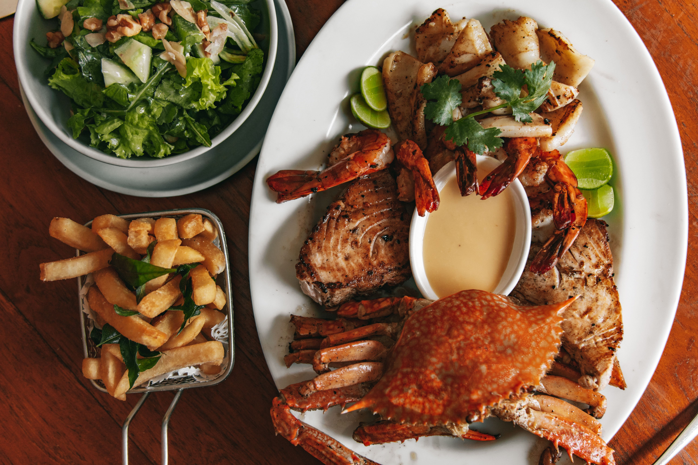

Local Seafood Restaurants
Seafood is an important part of Morehead City's coastal culture. Visitors can find restaurants serving different seafood dishes, including fish, shrimp, and other local favorites.
Discover Local Food and Coastal Flavors

Morehead City, North Carolina, has a variety of dining options for visitors who enjoy trying new foods. The area is especially known for its connection to fresh seafood and coastal dining experiences.
Whether you're looking for a casual meal, a seafood restaurant, or a place to eat near the waterfront, there are different options to explore while visiting.
Seafood is an important part of Morehead City's coastal culture. Visitors can find restaurants serving different seafood dishes, including fish, shrimp, and other local favorites.
One of the enjoyable experiences in Morehead City is eating near the waterfront. Visitors can enjoy a meal while taking in views of the water and boats.
Morehead City also offers casual restaurants and cafes for visitors who want a quick meal or a place to relax after exploring.
Morehead City's connection to fishing and seafood is an important part of the area's identity. Events such as the North Carolina Seafood Festival celebrate this coastal tradition.
After enjoying a meal, visitors can continue exploring the area by checking out the Indoor & Outdoor Activities page .